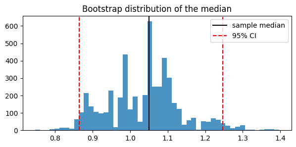
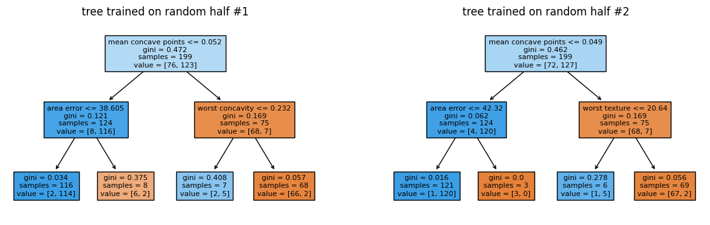
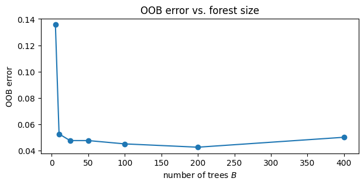
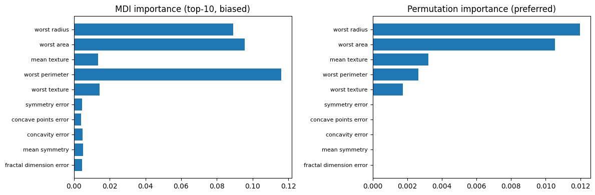
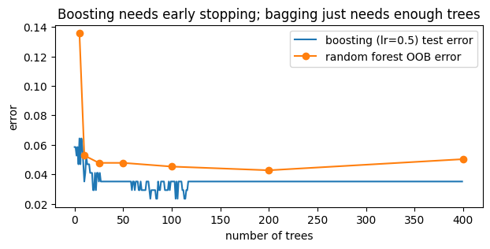

Walkthrough - Trees & Ensembles in Practice#
In this walkthrough we will:
Use the bootstrap to compute a confidence interval for a statistic with no closed-form formula.
See how unstable a single decision tree is.
Fix it with bagging / random forests, and use the OOB error for free validation.
Train gradient boosting (sklearn, XGBoost, CatBoost) and compare.
Companion lessons: Lessons 01-05 of this chapter.
import numpy as np
import matplotlib.pyplot as plt
from sklearn.datasets import load_breast_cancer
from sklearn.model_selection import train_test_split
from sklearn.tree import DecisionTreeClassifier, plot_tree
from sklearn.ensemble import RandomForestClassifier, GradientBoostingClassifier
from sklearn.metrics import accuracy_score
RNG = np.random.default_rng(0) # one seeded generator for reproducibility
Part 1 - The Bootstrap#
We estimate the median of a skewed distribution, and want a confidence interval for it. There is no simple analytic formula for the standard error of a median - but the bootstrap doesn’t care.
n = 200
data = RNG.lognormal(mean=0.0, sigma=1.0, size=n) # skewed data
theta_hat = np.median(data)
B = 5000
boot_medians = np.empty(B)
for b in range(B):
resample = RNG.choice(data, size=n, replace=True) # sample from F_hat
boot_medians[b] = np.median(resample)
se_boot = boot_medians.std(ddof=1)
ci = np.percentile(boot_medians, [2.5, 97.5]) # percentile interval
print(f"median = {theta_hat:.3f}, bootstrap SE = {se_boot:.3f}, 95% CI = [{ci[0]:.3f}, {ci[1]:.3f}]")
plt.figure(figsize=(7, 3))
plt.hist(boot_medians, bins=50, alpha=0.8)
plt.axvline(theta_hat, color="k", label="sample median")
plt.axvline(ci[0], color="r", ls="--", label="95% CI")
plt.axvline(ci[1], color="r", ls="--")
plt.title("Bootstrap distribution of the median")
plt.legend()
plt.show()
median = 1.050, bootstrap SE = 0.099, 95% CI = [0.864, 1.246]

The histogram is an estimate of the sampling distribution of the median. Also verify the 63.2% fact from the lesson: how many distinct points does a resample contain?
frac_in = np.mean([len(np.unique(RNG.choice(n, size=n, replace=True))) / n for _ in range(1000)])
print(f"average fraction of distinct points in a bootstrap resample: {frac_in:.3f} (theory: 1 - 1/e = {1 - np.exp(-1):.3f})")
average fraction of distinct points in a bootstrap resample: 0.633 (theory: 1 - 1/e = 0.632)
Part 2 - A Single Tree Is Unstable#
We train the same depth-limited tree on two random halves of the same dataset and compare the learned structures: the root split can change entirely.
X, y = load_breast_cancer(return_X_y=True)
feature_names = load_breast_cancer().feature_names
X_train, X_test, y_train, y_test = train_test_split(X, y, test_size=0.3, random_state=0)
fig, axes = plt.subplots(1, 2, figsize=(14, 4))
for ax, seed in zip(axes, [1, 2]):
idx = RNG.choice(len(X_train), size=len(X_train) // 2, replace=False)
tree = DecisionTreeClassifier(max_depth=2, random_state=0).fit(X_train[idx], y_train[idx])
plot_tree(tree, feature_names=feature_names, filled=True, ax=ax, fontsize=8)
ax.set_title(f"tree trained on random half #{seed}")
plt.show()

Same data distribution, different trees - this is the variance that ensembles attack.
Part 3 - Random Forest and the OOB Error#
More trees never hurt (the variance term decays like \(\frac{1-\rho}{B}\sigma^2\)). Watch the OOB error stabilize as \(B\) grows - no validation split needed.
n_trees_grid = [5, 10, 25, 50, 100, 200, 400]
oob_errors = []
for B_trees in n_trees_grid:
rf = RandomForestClassifier(
n_estimators=B_trees, oob_score=True, n_jobs=-1, random_state=0
).fit(X_train, y_train)
oob_errors.append(1 - rf.oob_score_)
plt.figure(figsize=(7, 3))
plt.plot(n_trees_grid, oob_errors, "o-")
plt.xlabel("number of trees $B$")
plt.ylabel("OOB error")
plt.title("OOB error vs. forest size")
plt.show()
rf = RandomForestClassifier(n_estimators=400, oob_score=True, n_jobs=-1, random_state=0).fit(X_train, y_train)
print(f"OOB accuracy: {rf.oob_score_:.4f}")
print(f"test accuracy: {rf.score(X_test, y_test):.4f} <- OOB is an honest estimate")
/opt/hostedtoolcache/Python/3.12.13/x64/lib/python3.12/site-packages/sklearn/ensemble/_forest.py:615: UserWarning: Some inputs do not have OOB scores. This probably means too few trees were used to compute any reliable OOB estimates.
warn(
/opt/hostedtoolcache/Python/3.12.13/x64/lib/python3.12/site-packages/sklearn/ensemble/_forest.py:615: UserWarning: Some inputs do not have OOB scores. This probably means too few trees were used to compute any reliable OOB estimates.
warn(

OOB accuracy: 0.9497
test accuracy: 0.9591 <- OOB is an honest estimate
Feature importance: MDI vs permutation#
from sklearn.inspection import permutation_importance
perm = permutation_importance(rf, X_test, y_test, n_repeats=20, random_state=0, n_jobs=-1)
order = np.argsort(perm.importances_mean)[-10:]
fig, axes = plt.subplots(1, 2, figsize=(12, 4))
axes[0].barh(range(10), rf.feature_importances_[order])
axes[0].set_yticks(range(10), feature_names[order], fontsize=8)
axes[0].set_title("MDI importance (top-10, biased)")
axes[1].barh(range(10), perm.importances_mean[order])
axes[1].set_yticks(range(10), feature_names[order], fontsize=8)
axes[1].set_title("Permutation importance (preferred)")
plt.tight_layout()
plt.show()

Part 4 - Boosting: sklearn, XGBoost, CatBoost#
Shallow trees, trained sequentially. Note the different bias: boosting uses weak (depth-3) learners, the forest used deep ones.
import xgboost as xgb
from catboost import CatBoostClassifier
models = {
"single tree (depth 3)": DecisionTreeClassifier(max_depth=3, random_state=0),
"random forest": RandomForestClassifier(n_estimators=400, n_jobs=-1, random_state=0),
"sklearn GBM": GradientBoostingClassifier(n_estimators=300, learning_rate=0.05, max_depth=3, random_state=0),
"XGBoost": xgb.XGBClassifier(n_estimators=300, learning_rate=0.05, max_depth=3, random_state=0, verbosity=0),
"CatBoost": CatBoostClassifier(iterations=300, learning_rate=0.05, depth=3, verbose=False, random_seed=0),
}
for name, model in models.items():
model.fit(X_train, y_train)
print(f"{name:24s} test accuracy = {accuracy_score(y_test, model.predict(X_test)):.4f}")
---------------------------------------------------------------------------
ModuleNotFoundError Traceback (most recent call last)
Cell In[7], line 1
----> 1 import xgboost as xgb
2 from catboost import CatBoostClassifier
3
4 models = {
ModuleNotFoundError: No module named 'xgboost'
Boosting overfits in the number of trees; bagging doesn’t#
We track the test error of gradient boosting per stage with a deliberately large learning rate to make the overfitting visible, and compare to the forest’s flat curve.
gbm = GradientBoostingClassifier(n_estimators=400, learning_rate=0.5, max_depth=3, random_state=0).fit(X_train, y_train)
boost_test_err = [1 - accuracy_score(y_test, y_pred) for y_pred in gbm.staged_predict(X_test)]
plt.figure(figsize=(7, 3))
plt.plot(boost_test_err, label="boosting (lr=0.5) test error")
plt.plot(n_trees_grid, oob_errors, "o-", label="random forest OOB error")
plt.xlabel("number of trees")
plt.ylabel("error")
plt.legend()
plt.title("Boosting needs early stopping; bagging just needs enough trees")
plt.show()

TODO exercises#
Refit XGBoost with
early_stopping_rounds=20and aneval_set- how many trees does it actually keep?Lower
learning_rateto 0.01 in the plot above (and raisen_estimators). What happens to the overfitting?In the random forest, sweep
max_featuresover[1, 3, 5, "sqrt", None]and plot OOB error - find the correlation/strength tradeoff from Lesson 03.CatBoost’s specialty is categorical features. Bin two continuous features of this dataset into quartile categories, pass them via
cat_features=[...], and check whether accuracy survives.